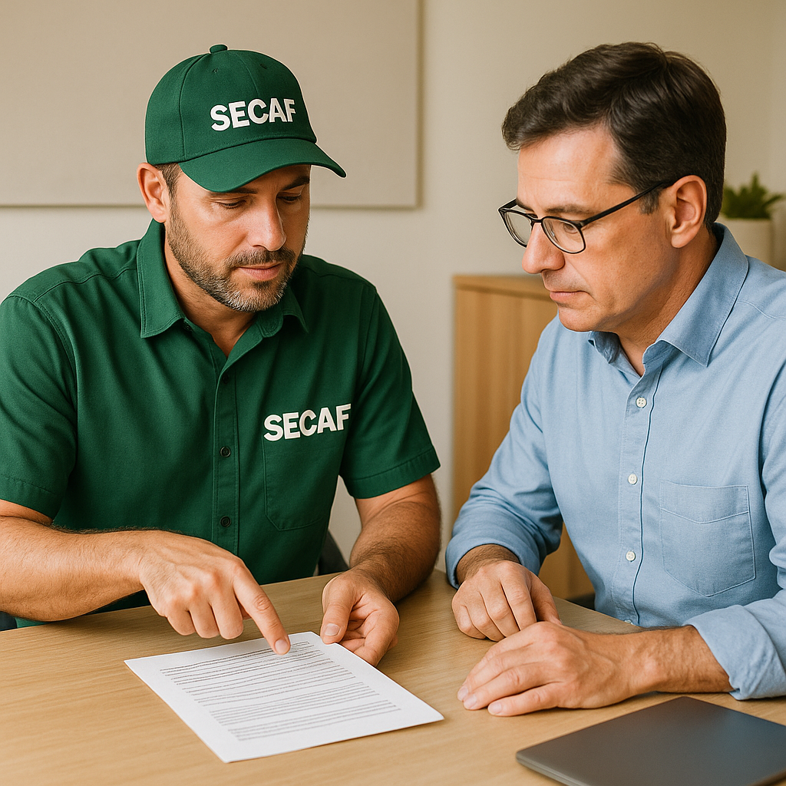

Projetos para Prefeituras
A SECAF atua como parceira estratégica de prefeituras e secretarias municipais no desenvolvimento, execução e acompanhamento de projetos voltados ao meio rural, meio ambiente e infraestrutura agrícola. Nosso foco é proporcionar soluções técnicas, sustentáveis e eficientes para políticas públicas no campo.
O que a SECAF pode oferecer para Prefeituras
1. Elaboração de Projetos Técnicos Rurais
Projetos de apoio à agricultura familiar, mecanização agrícola, abastecimento de água, revitalização de estradas vicinais e outras demandas específicas do setor rural municipal.
2. Chamadas Públicas e Convênios
Apoio na elaboração e execução de chamadas públicas para aquisição de produtos da agricultura familiar (PNAE, PAA), bem como para celebração de convênios com o Governo Federal, Estadual e instituições privadas.
3. Planos Municipais
- Plano Municipal de Desenvolvimento Rural Sustentável
- Plano Municipal de Saneamento Básico Rural
- Plano Municipal de Arborização Urbana
- Plano de Combate à Desertificação e Recuperação de Áreas Degradadas
4. Projetos Ambientais
Desenvolvimento de ações e planos voltados à educação ambiental, recuperação de nascentes, reflorestamento de áreas públicas, manejo de resíduos sólidos rurais e conservação de solo e água.
5. Assistência Técnica e Extensão Rural (ATER)
Implantação de serviços de ATER em parceria com secretarias municipais e associações, capacitando pequenos produtores e fortalecendo a cadeia produtiva local.
6. Projetos de Irrigação Coletiva
Desenvolvimento de projetos comunitários de irrigação com foco em áreas periurbanas e assentamentos rurais. Elaboração técnica completa com viabilidade hidráulica, econômica e ambiental.
7. Capacitações e Cursos Técnicos
Execução de cursos e treinamentos para agricultores, técnicos da prefeitura, professores e lideranças comunitárias em temas como agroecologia, segurança alimentar, manejo de culturas, gestão da propriedade rural e associativismo.
8. Acompanhamento de Obras e Execução de Projetos
Supervisão técnica e acompanhamento de obras públicas voltadas ao campo, como perfuração de poços, construção de barragens, casas de farinha, galpões de produção, viveiros e feiras livres.
9. Acesso a Recursos e Editais
Captação de recursos por meio de projetos apresentados a editais públicos e privados, como MAPA, MDA, ANA, FUNASA, Itaipu Binacional, SEBRAE, entre outros.
10. Regularização Fundiária e Ambiental
Auxílio em processos de CAR, CCIR, INCRA, e georreferenciamento para regularização de propriedades municipais e apoio aos agricultores locais.
Equipe Multidisciplinar
Contamos com engenheiros agrônomos, florestais, civis, técnicos agrícolas, ambientalistas e especialistas em políticas públicas para oferecer soluções integradas.
Entre em contato e conheça nossos modelos de parceria com prefeituras. A SECAF está pronta para ajudar seu município a crescer com sustentabilidade e eficiência no campo.